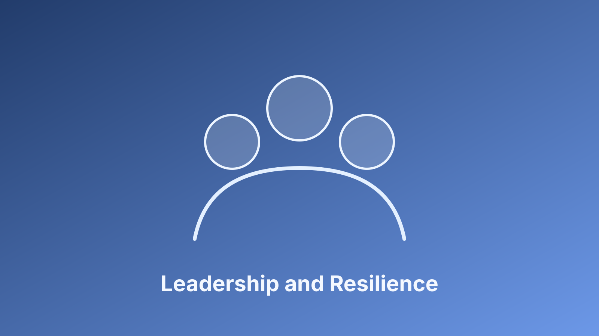

Resilience Is a Team System, Not an Individual Trait
In high-stakes cybersecurity environments, resilient performance comes from clarity, communication, and trust under pressure. Teams need explicit roles for incident response, dependable escalation paths, and psychological safety to raise risks early.
Leaders can improve resilience by making expectations predictable and by treating near-miss reporting as valuable input, not as failure.
Practice Before the Incident, Learn After It
Tabletop exercises and cross-functional rehearsals strengthen decision quality during real events. Guidance from CISA tabletop exercises supports this approach by emphasizing preparation, scenario realism, and after-action learning.
I recommend a simple cycle: rehearse, document gaps, assign owners, and verify improvements in the next exercise. Over time, this turns resilience from a slogan into a measurable capability that protects both people and operations.
For executive leaders, the practical next step is to translate these ideas into a standing monthly operating review: one section for risk movement, one for remediation ownership, and one for measurable outcomes. This keeps technical work tied to business decisions and helps teams improve consistently rather than react episodically. Programs that use this rhythm usually see faster escalation, clearer accountability, and stronger trust across engineering, operations, and compliance stakeholders.